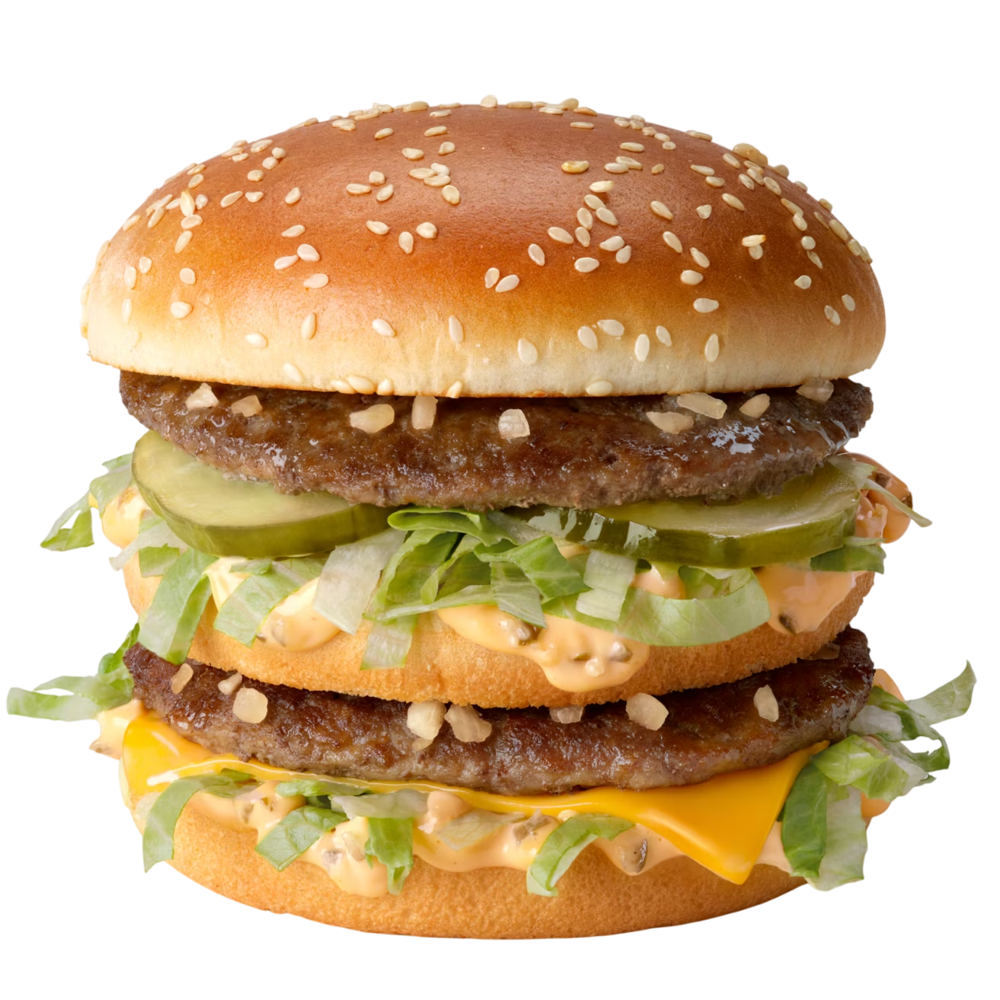

Un almuerzo común.
Hamburguesa
505 calorías
Papas fritas
292 calorías
Bebida
269 calorías
Total del combo
1.066 calorías
Esto representa aproximadamente 53% de la ingesta calórica diaria recomendada para un adulto.
Para sentirlo de otra forma:
0 km
caminando, para quemar las calorías de este combo